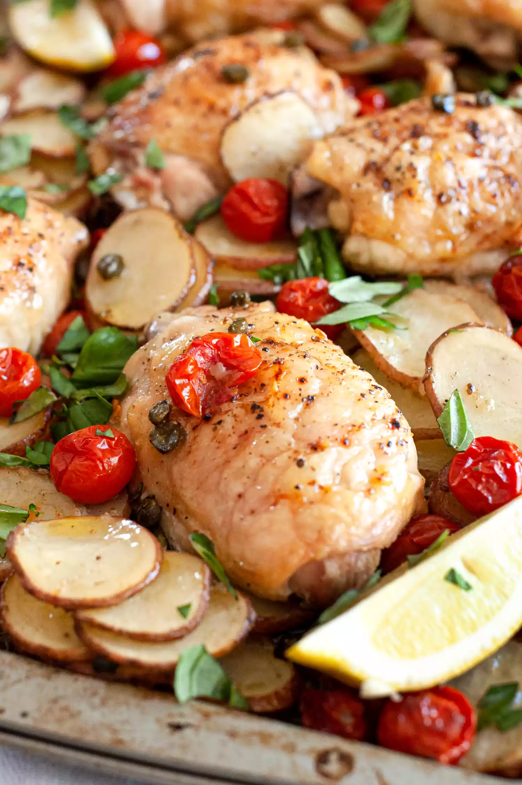

Lemon chicken

Description
This sheet pan dinner is a combination of juicy chicken thighs, capers, lemon, cherry tomatoes, and a generous
shower of fresh basil. Everything is done at once and can be served straight from the sheet pan.
Super simple, foolproof recipe suitable for (but not limited to) absolute beginners. Perfect for a breezy spring
day.
Ingredients
- 1 1/2 pounds small, waxy potatoes, such as red, fingerlings, or yellow finn
- 1 pint (2 cups) cherry tomatoes
- 3 tablespoons capers
- 1 large lemon
- 3 tablespoons extra-virgin olive oil
- 1 teaspoon ground cumin
- 2 large cloves garlic, grated on a microplane or finely chopped
- 2 1/2 teaspoons kosher salt, divided
- 2 1/2 pounds bone-in, skin-on chicken thighs
- Freshly ground black pepper, to taste
- 1/3 cup fresh basil, roughly chopped, for garnish
Steps
- Preheat the oven: Preheat oven to 425°F.
- Cut the potatoes: Slice the potatoes into 1/8 to 1/4-inch-thick rounds.
- Assemble veggies on baking sheet: Pile the potatoes, cherry tomatoes, and capers on a large baking sheet.
- Make lemon dressing and coat veggies: Cut the lemon in half and squeeze 1 tablespoon juice into a small
bowl. Cut the remaining lemon half into several wedges and reserve for later. In the small bowl with the
lemon, whisk in the olive oil, cumin, garlic, and 1 teaspoon salt. Pour over the potatoes, tomatoes, and
capers and use your hands to coat everything. Spread out the potatoes, tomatoes, and capers into a single
layer.
- Season the chicken: Season the chicken thighs on both sides with 1 1/2 teaspoons salt and freshly ground
black pepper, to taste.
- Add chicken thighs to baking sheet:
Nestle the chicken thighs amongst the potatoes, tomatoes, and capers spacing them evenly across the baking
sheet. It's ok if some of the potatoes are beneath the chicken.
- Roast the chicken and vegetables: Roast for about 40 minutes, spooning or brushing the chicken with pan
juices and stirring the potatoes about halfway through. The sheet pan dinner is done when the potatoes are
tender and starting to brown and the chicken is tender, the skin is crispy, and the meat registers 165°F
with an instant-read thermometer.
- Garnish, rest the chicken for 10 minutes, and serve: Add the reserved lemon wedges to the baking sheet.
Scatter the basil over everything. Let the chicken rest for 10 minutes and serve.